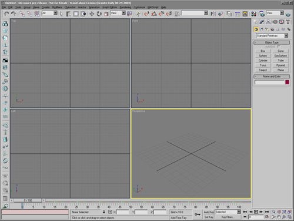

Overview
The DefaultUI interface contains:
- A Main Toolbar where the most common tools can be
accessed.
- A Reactor toolbar
- A Layers toolbar (hidden by default)
- An Extras toolbar containing tools that are not used
often: AutoGrid, Keyboard shortcut Override, Array flyout, Render Presets
drop down
- All the standard UI schemes provided with 3ds max define the same
pull down menus, keyboard shortcuts and right-click menus.
Note: The tutorials provided with 3ds max assume that this
interface scheme is used by default.
 |